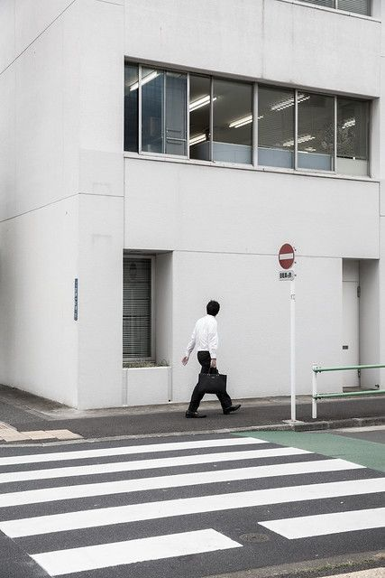

tokimo.
building calm websites
for cafes, small brands,
and quiet spaces.
カフェや小さなブランドのためのウェブ制作
카페와 작은 브랜드를 위한 웹사이트
frontend / branding / direction フロントエンド・ブランディング
Project
Start a Project →



About
I’m a frontend developer based between Seoul and Tokyo.
I build simple, calm websites for brands and spaces.
ソウルと東京を拠点に、シンプルで落ち着いたウェブを制作しています。
서울과 도쿄를 오가며, 차분한 웹을 만듭니다.
I’m interested in how atmosphere can be translated into web. 空間の空気感をウェブに落とし込むことに興味があります。 공간의 분위기를 웹으로 옮기는 작업에 관심이 있습니다.
Working mainly with HTML, CSS, and JavaScript.

TOKIMO
PROJECT
This project explores how space, fashion, and web intersect.
Selected Projects
Focused on structure, branding, and digital experience
 001 / Select Shop
001 / Select Shop
Curated Select Shop
A minimal website for a small fashion select shop.
Focused on layout, spacing, and product flow.
セレクトショップのためのミニマルなウェブデザイン
편집샵을 위한 미니멀 웹사이트
Role: Design / Frontend
Result: Simplified layout / Faster image loading
 002 / Cafe
002 / Cafe
Slow Coffee Space
A simple website for a quiet coffee shop.
Built to reflect atmosphere rather than features.
静かなカフェの空気感を表現したウェブサイト
조용한 카페의 분위기를 담은 웹사이트
Role: Design / Frontend
Result: Reduced visual noise / Improved readability
What I Do
Simple websites for cafes and small brands.
カフェや小さなブランドのためのシンプルなウェブ制作
카페와 작은 브랜드를 위한 웹사이트 제작
Simple structure, calm interaction, and clear branding.
- Cafe websites Single-page or small websites カフェ向けのシンプルなサイト
- Landing pages For small brands and projects 小規模ブランド向けLP制作
- Frontend HTML / CSS / JavaScript
Available for small projects.
Contact via Instagram or Email.
Architecture of
Work
하나의 브랜드가 디지털 공간에 안착하기까지의 여정.
一つのブランドが、デジタル空間に深く根を下ろすまでの軌跡。
Discovery & Mood
브랜드의 본질과 타겟을 분석합니다. 레퍼런스 수집과 시각적 무드보드를 통해 프로젝트의 공기감을 설정하고 방향성을 합의합니다. ブランドの本質を読み解き、ムードボードを通じて最適な視覚的アプローチを設計します。
Digital Craft
에디토리얼 레이아웃과 Vanilla JS를 활용한 정숙한 인터랙션을 구현합니다. 픽셀 단위의 디자인과 최적화된 프론트엔드 개발이 동시에 진행됩니다. ピクセル単位のUI設計と、細部までこだわり抜いたフロントエンド開発を行います。
Localization & Launch
일본 시장 진출을 위한 번역 최적화 및 로컬 뉘앙스를 반영합니다. QA 테스트 후 성공적인 런칭과 유지보수 가이드를 제공합니다. 日本のローカルな文脈に寄り添い、違和感のない自然なデジタル体験へと翻訳します。
Open for new projects
from May 2026
2026年5月以降のご依頼を受け付けています。
2026년 5월 이후 작업 가능합니다.
REQUEST A PROPOSAL / 制作のご依頼 →Frequently Asked
Questions
静かなものづくりを、共に。
Let’s archive your
Brand Identity.
새로운 프로젝트에 대한 영감을 기다립니다. 新しいプロジェクトへのインスピレーションをお待ちしております。
Start a Conversation →